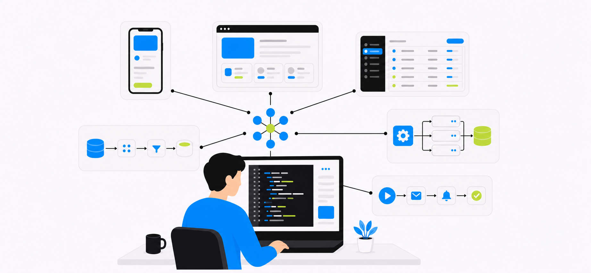
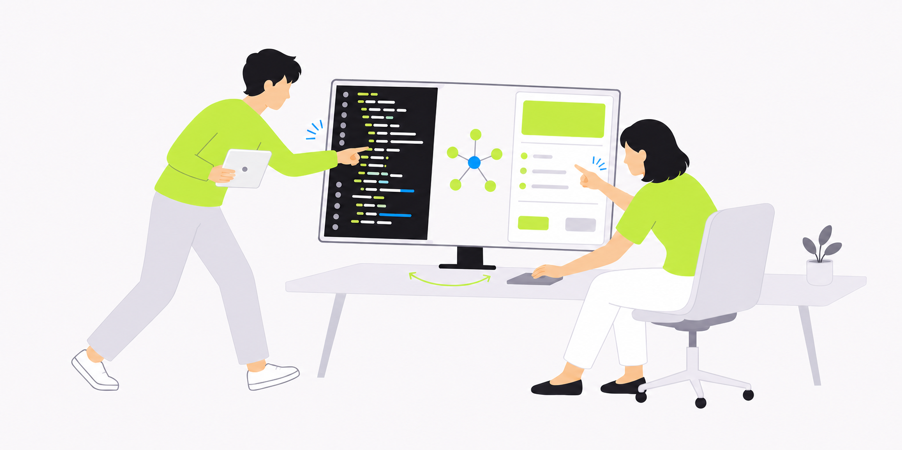

01
AI駆動型システム開発
AIとモダンな技術スタックを活用し、高速・高品質なシステムを開発
現場の知識や業務のコンテキストを設計・開発へ反映し、ビジネスの変化に合わせて改善できるシステムを構築します。

AIとモダンな技術スタックを活用し、高速・高品質なシステムを開発
現場の知識や業務のコンテキストを設計・開発へ反映し、ビジネスの変化に合わせて改善できるシステムを構築します。

業務を最も理解する担当者が、自然言語でシステムを開発できる組織へ
開発環境とガードレールを整備し、実践を通じて知識とノウハウを社内へ移管します。
AIを業務に組み込み、人とAIが協働する新しい働き方へ
実際の業務と人を起点に、AIを前提とした業務プロセスへ再設計し、組織全体へ定着させます。